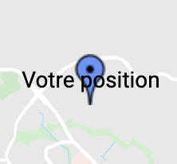
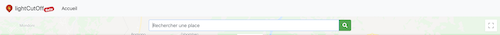
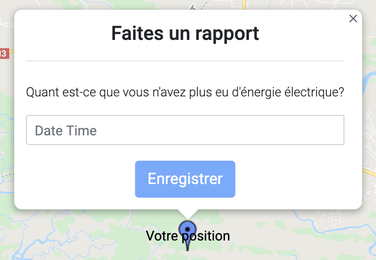
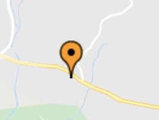
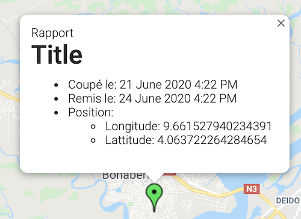

<div class="tuto">
    <div class="container">
      <div class="jumbotron jumbotron-fluid" id="start">
        <div class="container">
          <h1 class="display-3">Apprenez à utiliser {{projectTitle}}</h1>
          <p class="lead">Comment utiliser <strong><u>{{projectTitle}}</u></strong>?</p>
        </div>
      </div>

      <div class="row">
        <div class="alert alert-success text-center tuto__alert" role="alert">
          <i class="fas fa-info-circle"></i> Dans ce tutoriel, <b>un rapport</b> est aussi <b>un signalement</b> et vice versa.
        </div>
        <div class="col-md-9">
          <div data-spy="scroll" data-target="#navbar-example3" data-offset="0" class="tuto__text">
            <p class="lead">
              Voici un petit tutoriel pour vous apprendre à utiliser notre application:
            </p>

            <p class="lead">
              Pour commencer, voici la légende de notre map.
            </p>
            <app-map-legend></app-map-legend>
            <p class="lead">
              Comme vous pouvez le voir, il existe un signalement particulier pour chaque situation.
            </p>
            <h3 class="display-4" id="start_1">Pour débuter</h3>
            <p class="lead">
              L'application est uniquement disponible au Cameroun. Ce qui veut dire qu'aucun rapport ne sera accepté s'il est fait en dehors du Cameroun.
            </p>
            <p class="lead">
              Lorsque vous arrivez sur notre map, vous serez geolocalisé et votre position sera représentée par un marqueur bleu.
               Il est possible que votre position ne soit pas exactement précise alors, pour l'améliorer nous avons prévu un module de
              recherche de place qui vous permettra de mieux vous situer dans la map.
               S'il s'avère que vous devez déplacer votre marqueur bleu sur une très longue distance, vous n'avez pas
              forcement besoin de le glisser sur tout le long. Un double click sur un endroit de la map suffira.
            </p>
            <h3 class="display-4" id="add-report">Ajouter un rapport</h3>
            <p class="lead">
              Comme vous le savez surement, {{projectTitle}} à pour but de collecter des données sur les coupures d'électricité au Cameroun. Pour pouvoir ajouter un rapport, il vous suffit de cliquer une fois sur le votre marqueur bleu et un formulaire apparait. Il
              vous suffira de choisir une date et une heure correspondante à la coupure.
              
            </p>

            <h3 class="display-4" id="signal-report">Signaler une coupure d'électricité</h3>
            <p class="lead">
              Après avoir créé un rapport, il y a 2 possibilités:
              <br>- Vous signalez une coupure en cours alors, aprés avoir enregistré le rapport précédent, un nouveau formulaire vous ait présenté mais, vous n'êtes pas dans l'obligation de le remplir. Vous remarquerez un marqueur orange qui signale
              une coupure en cours que vous avez signalé et que vous seul pouvé fermer.
              <br>
              <br>Pour fermer un rapport de coupure émis, il vous suffit de cliquer sur un marqueur le marqueur orange correspondant et remplir le formulaire.
              <br>- Un autre formulaire vous ait proposé pour terminer votre rapport. Juste après que vous l'ayez créé. Il vous demandera la date et l'heure de fin de la coupure. En remplissant et en envoyant le formulaire vous opérerez alors à
              la fermeture du rapport de coupure.
            </p>

            <h3 class="display-4" id="after-signal">Après votre signalement </h3>
            <p class="lead">
              Après la fermeture d'un rapport émis (section: Signaler une coupure), vous verez un marqueur vert. Pour signifier aux utilisateurs que votre signalement de coupure précédent n'est plus. La situation est revenue à la normale (électricité remise).
              
            </p>
          </div>
        </div>
        <div class="col-md-3">
          <ul class="nav flex-column tuto__menu">
            <li class="nav-item">
              <a class="nav-link active" href="/tuto#start">Introduction</a>
            </li>
            <li class="nav-item">
              <a class="nav-link" href="/tuto#start_1">Débuter</a>
            </li>
            <li class="nav-item">
              <a class="nav-link" href="/tuto#add-report">Ajouter un rapport</a>
            </li>
            <li class="nav-item">
              <a class="nav-link" href="/tuto#signal-report">Signaler une coupure d'électricité</a>
            </li>
            <li class="nav-item">
              <a class="nav-link" href="/tuto#after-signal">Après votre signalement </a>
            </li>
          </ul>
        </div>
      </div>
    </div>
</div>
